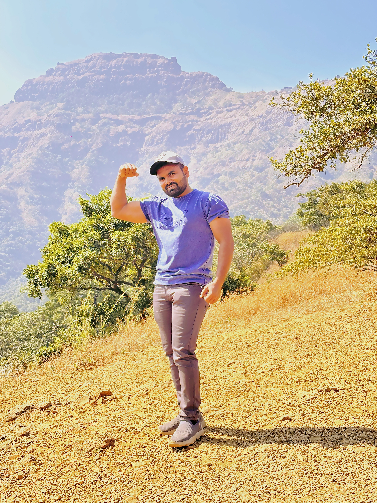

Hello Everyone,
I am Nitin Pathak. I am happy to say that Newasa is my hometown. Being a part of this close community that taught me sticking together and enjoying the little things in rural life. I completed my schooling at Jijamata School and pursued my higher education at Raisoni college. These institutions have played a significant role in shaping my academic journey and personal growth.
"I am a motivated and confident individual who believes in continuous learning and personal growth. I approach every task with dedication, responsibility, and a positive mindset. I enjoy exploring new opportunities that help me develop my skills and broaden my understanding. Teamwork, discipline, and clear communication are values I strongly believe in. I like taking on challenges and finding practical solutions with creativity and patience. My goal is to contribute effectively to any environment I am part of while constantly improving myself professionally and personally."